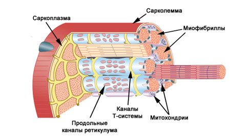

Продолжаем углубляться в темы ПРОДВИНУТОГО блока, предоставляя вам больше информации о том, как и что работает в нашем организме. Надеемся, что инфо-посты получаются не слишком сложными, но если что-то не понимается с первого раза, рекомендуем прочитать ещё разок. Ну а сегодня мы поговорим о том, что волнует многих наших участников.
Следует заметить, что точный механизм роста мышц неизвестен, то есть ученые до сих пор не сошлись во мнении о том, появляются ли новые мышечные волокна или происходит расщепление и утолщение уже имеющихся, и как сильно все это завязано на генетику. Но можно выделить 4 фактора, которые необходимы для обеспечения роста мышечной массы:
1. Повышение концентрации анаболических гормонов в крови.
2. Повышение концентрации свободного креатина в мышцах.
3. Повышение концентрации ионов водорода в мышцах.
4. Запас аминокислот в клетке.
Здесь используется слово "факторы", потому что причинно-следственная связь между ними и ростом мышц до конца не изучена. Хотя экспериментально и доказано, что они работают, но вот почему и как именно - этот вопрос ещё открыт.
1. Повышение концентрации анаболических гормонов в крови
Справка:
Анаболизм — совокупность химических процессов, составляющих одну из сторон обмена веществ в организме, направленных на образование клеток и тканей.
Анаболические гормоны — гормоны, выделяемые организмом и служащие сигналом для начала анаболизма.
Анаболические гормоны — гормоны, выделяемые организмом и служащие сигналом для начала анаболизма.
Из четырех факторов, которые мы сегодня рассматриваем, этот является самым важным, поскольку именно он запускает процесс синтеза миофибрилл (мышечных волокон) в клетке. Повышение концентрации анаболических гормонов в крови происходит под воздействием физиологического стресса, достигнутого в результате отказных повторений в подходе. В процессе тренировки гормоны заходят в клетку, а обратно не выходят, поэтому чем больше сделано подходов, тем больше гормонов будет внутри клетки.
Под действием гормонов в мышечных волокнах образуются различные структуры, принимающие участие в синтезе белковых молекул. Надо заметить, что анаболические гормоны в процессе синтеза белка полностью утилизируются внутри клетки в течение нескольких суток.
Как добиться? Дать на тренировке такую нагрузку, чтобы она была стрессом для организма!
Что такое стресс?
Под стрессом в данном случае понимается такой уровень нагрузки на тренировке, к которой ваш организм не был готов. Если принять текущий уровень подготовки за точку отсчета, то чем сильнее вы будете удаляться от неё в сторону повышения нагрузки, тем сильнее организм будет испытывать стресс.
Если регулярно на тренировках подтягиваться по 30 раз (по 5 повторений в 6 подходах), то организм привыкнет к этой нагрузке. При сохранении всех прочих вводных условий тренировки (включая темп, вид подтягивания и т.д. и т.п.), если на следующей тренировке сделать больше 30 подтягиваний, то это будет для организма стрессом. 40, 35 или даже 31 подтягивание — все равно будет стресс. Конечно, если сделать 35, это будет большим стрессом, чем 31, но и 31 будет стрессом. Потому что раньше такой нагрузки не было. При этом если сделать 30 или меньше повторений, то стресса не будет. Есть такая штука, под названием адаптация (приспособление), которой ваш организм очень любит заниматься и является одним из лучших мастеров в мире. Поэтому то, что когда-то было стрессом, довольно быстро перестает им быть по мере адаптации.
Как писал Льюис Кэрролл, "Нужно бежать со всех ног, чтобы только оставаться на месте, а чтобы куда-то попасть, надо бежать как минимум вдвое быстрее!"
2. Повышение концентрации свободного креатина в мышцах
Накопление свободного креатина в саркоплазме (несократительной части мышцы) служит критерием интенсификации метаболизма в клетке.

Креатинфосфат (КрФ) транспортирует энергию от митохондрий к миофибриллам в окислительных мышечных волокнах (ОМВ) и от саркоплазматических АТФ к миофибриллярным АТФ в гликолитических мышечных волокнах (ГМВ). Точно так же он транспортирует энергию и в ядро клетки, к ядерным АТФ. Если мышечное волокно активизируется, то в ядре также тратится АТФ, а для ресинтеза АТФ требуется получать КрФ извне, потому что других источников энергии для ресинтеза АТФ в ядре нет (там нет митохондрий).
Хотя все органеллы организма регулярно обновляются (то есть этот процесс идет всегда), но в результате тренировки, приводящей к активности мышечного волокна, в саркоплазме происходит накопление свободного креатина. Это означает, что идут активные метаболические и пластические процессы. КрФ в ядрышках отдает энергию для ресинтеза АТФ, свободный Кр двигается к митохондриям, где опять ресинтезируется в КрФ. Таким образом, часть КрФ начинает включаться в обеспечение энергией ядра клетки, значительно активизируя все пластические процессы, происходящие в ней.
Как добиться? Дать на тренировке такую нагрузку, чтобы она была стрессом для организма!
3. Повышение концентрации ионов водорода в мышцах
Повышение концентрации ионов водорода вызывает увеличение размеров пор в мембранах, что ведет к облегчению проникновения гормонов в клетку, активизирует действие ферментов, облегчает доступ гормонов к наследственной информации, к молекулам ДНК.
Во время выполнения упражнений в динамическом режиме рост миофибрилл в ОМВ не происходит (хотя они тоже участвуют в работе, как и ГМВ) потому что в них активизируются только три фактора мышечного роста из четырех. Ввиду большого количества митохондрий и непрекращающейся доставки кислорода с кровью во время упражнения, накопления ионов водорода в саркоплазме ОМВ не происходит. Соответственно, гормоны не могут проникнуть в клетку, и анаболические процессы не разворачиваются. Ионы водорода активизируют все процессы в клетке. Клетка активна, по ней бегут нервные импульсы, а эти импульсы заставляют миосателлиты начать образовывать новые ядра. При высокой частоте импульсации создаются ядра для БМВ, при низкой – ядра для ММВ.
Надо только помнить, что закисление не должно быть избыточным, иначе ионы водорода начнут разрушать белковые структуры клетки, и уровень катаболических процессов начнёт превышать уровень анаболических процессов.
Как достичь? Делать подходы до мышечного отказа.
4. Запас аминокислот в клетке
Последний, но не по важности, фактор на сегодня — наличие необходимого количества аминокислот в клетке. Аминокислоты — это строительные кирпичики, из которых строятся белки, а значит и мышцы. Этот фактор связан не с тренировочным процессом, а с обеспечением правильного и полноценного питания.
Накопление аминокислот в клетке происходит постепенно в виде аминокислотного пула, поэтому нет необходимости в повышении содержания аминокислот в крови непосредственно перед или во время выполнения упражнения. В свою очередь, синтез белка идет в течение ближайших суток после силовой тренировки, поэтому обеспечивать организм необходимым количеством белка необходимо именно в течение несколько дней после тренировки. Кстати, об этом косвенно говорит и повышенный метаболизм в течение 2-3 суток после силовой тренировки.
Как добиться? Обеспечить необходимое питание в течение всего времени.
Дополнительно
Строительство новых миофибрилл продолжается 7-15 дней, но наиболее активно накопление рибосом (важнейшая немембранная органелла всех живых клеток, служащая для биосинтеза белка из аминокислот) происходит во время тренировки и первые часы после нее. Ионы водорода делают свое дело как во время тренировки, так и в ближайший час после нее. Гормоны работают, расшифровывают информацию с ДНК, еще 2-3 дня, но не так интенсивно, как в период тренировки, когда данный процесс активизируется еще и повышенной концентрацией свободного креатина.